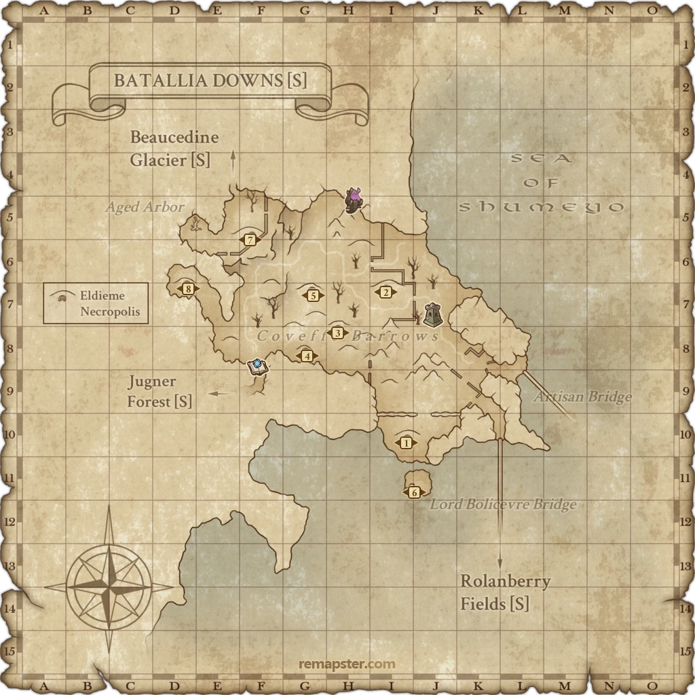

Description
Batallia Downs (S) is an outdoor area in The Norvallen Front.
Map

Maps retain their source annotations. Follow the mission steps for Zenith requirements; modern reference markers do not grant access. Instance galleries show alternative layouts, not a single continuous route.
Story walkthroughs in this area
| Story | Mission / quest |
|---|---|
| WotG B-00 | The Fighting Fourth |
| WotG 41-3 | Her Memories: Operation Cupid |
| WotG S-11 | Chasing Shadows |
| WotG S-12 | Face of the Future |
| WotG 2 | Back to the Beginning |
| WotG 13 | Borne by the Wind |
| WotG 14 | A Nation on the Brink |
| WotG 17 | Northland Exposure |
| WotG 40 | Edge of Existence |
| WotG 42 | Forget Me Not |
References
External references describe their own server or retail rules. Documented Zenith changes take precedence.
Map credits: Map 1 — Remapster (AkadenTK) (CC-BY-SA-4.0). Original game maps © SQUARE ENIX; redrawn maps retain the credited authorship and license.